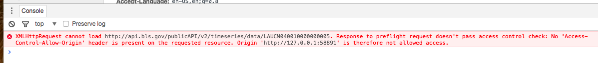
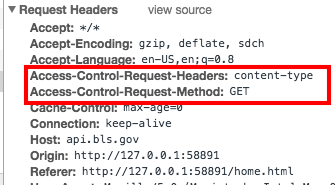

It is essentially a contract provided by one piece of software to another software. The API that we are looking at is for the Bureau Labor of Statistics. We will be sending a message to bsl.gov API. The bsl.gov responds with a structured response.
One can get data from a website within an API. However, with an API, the structure of the request and resopnse is documented upfront by bsl.gov and is likely to remain constant even if the website undergoes a make-over.
Here's a great video on YouTube which explains what an API in layman term.
You will have noticed that when you browse through Sample Codes onbsl.gov, you may have noticed that JavaScript is missing. You may wonder, "Gee, why isn't JavaScript offered here?"
I though that perhaps they haven't gotten to writing sample codes for JavaScript. I went down the trail of developing sample code for javascript using AJAX. I got this far:
<!DOCTYPE html>
<html>
<head>
<script>
var bslURL = 'http://api.bls.gov/publicAPI/v2/timeseries/data/';
var bslSeriesID = 'LAUCN040010000000005';
var payload;
/* Process to format URLs for submission base url + api key + parameters*/
payload = bslURL + bslSeriesID;
var request = new XMLHttpRequest();
request.open('GET', payload, true);
request.setRequestHeader("Content-Type","application/json");
request.addEventListener('load',function()
{
if(req.status >= 200 && req.status < 400){
var response = JSON.parse(req.responseText);
console.log(response);
} else {
console.log('Error in network request: ' + req.statusText);
}
});
request.send(null);
</script>
</head>
<body>
</body>
</html>
If you copy and paste and try to run this locally, you will get the following error message:
If you dig a little deeper by pulling up developer tools, you will find the following about the BLS request header
This essentially tells you that the BLS is not allowing cross-origin request by Access-Control-Allow-Origin: . If it did, you would have saw the following in the header
Access-Control-Allow-Origin: *
Therefore, we cannot retrieve data using AJAX and must use server-side GET request to retreive the data. But, first, we will need basic information, which are Series Id to pull the data, which will be discussed next.
Next: How to get Series Id